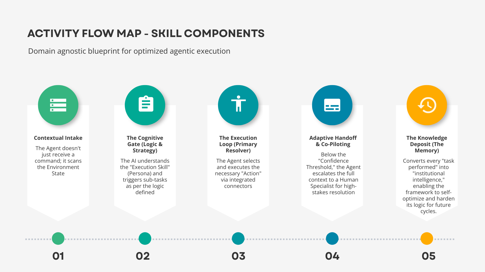

About Me
Techno-functional professional with over 5 years of experience in connecting technical architectures with business goals. I specialize in using AI and SaaS environments to improve product discovery and performance.
By turning high-level ideas into workable PRDs, I have successfully led cross-functional teams of over 20 people using Agile Scrum framework. I am skilled in using wireframes and rapid prototyping to keep stakeholders on the same page and ensure roadmaps meet business needs through focused product ownership.
Work History
Consultant
Wipro Ltd
Machine Learning Data Associate
Amazon India Pvt Ltd
Education & Profile
Masters of Business Administration (MBA)
Marketing & IB
Institute of Management Studies, BHU
B.Tech / Electronics & Communications Engineering
Bengal Institute of Technology, MAKAUT
Languages Spoken: English, Hindi, Bengali
Location Base: Kolkata, India
Featured Projects

Beyond Automation: Operationalizing Strategic Execution with AI
A domain-agnostic, AI-native framework designed as a Primary Resolver for complex business processes. Using an e-Commerce Cart Abandonment use case, I demonstrated how to move from rigid automation to self-correcting Agentic AI Skills.

Decoding Value Management Process of Tanishq
Analyzed the premier jewelry brand through the lens of a 5-phase Value Management Framework (Value Discovery, Product Creation, Value Capture, Marketing & Communication & Value Delivery) which transformed an opaque commodity market into a transparent high margin ecosystem.

Implementation of Go-to-Market Strategy
Strategic Go-to-Market Execution: Developed and executed GTM strategies envisioned for improving product-market fit in key geographical segments. Generated a high-intent sales pipeline worth 3M INR within 3 months, achieving the highest performance rank across all geographies.
Skill Competencies
Managing full-stack monitoring solutions for infrastructure, DB & Front-End
Skilled in wireframing and iterative low-to-mid fidelity AgenticAI and embeddedAI prototyping
Implementing 'Deviation Triggers' and 'Edge cases' within AI workflows to optimize 'judgment gaps'
Driving Scrum ceremonies like Backlog refinement, Sprint planning & Daily Stand-ups during delivery
Bootstrapping AI-SaaS lab environments for product-build and launch by leading team
Managing alliance for strategic partners to build joint solutions, curate value-propositions and GTM
Thought Leadership

Unlock the power of AI with 360 degree visibility of Business and IT
Contributed analysis detailing the enterprise capabilities unlocked by embedding broad visibility tracking systems layered across modern automated platforms.
View Published Blog Post →Awards & Honors

Wipro Exemplary Enabler
Best Support Function Metric Award.
Best Newsletter Award (3rd Place)
Chief Editor of Toastmasters Club portfolio.
Professional Endorsements
"Absolutely thrilled to recommend Joydeep for his exceptional support during the Gen AI POC for SAP AMS at the ABB Accelerator event! In a remarkably short time frame, Joydeep's expertise and dedication were instrumental in our success, propelling us into the Top 10. His commitment to excellence and seamless collaboration truly made a difference, showcasing his outstanding skills and professionalism. It was a pleasure working with Joydeep, and I highly commend his invaluable contributions to our team's achievement!"
"Joydeep is known for his timely communication, consistency and remarkable responsiveness to the requests of peers, associates and subordinates alike. His genuine curiosity in learning new technologies, tools and processes, drives him to delve deeper into Techno-functional tasks and execute them with perfection. His contribution to the Product Center of Intelligence and various Go-To-Market activities are commendable. I am confident that he'd continue to make significant impact and inspire people around him."
"Joydeep is a highly skilled professional with a keen eye for detail and a strong work ethic. His creative thinking and strategic mindset have been invaluable in improving efficiency in the tasks he owned. He has an outstanding ability to effectively plan and execute with precision and finesse. Joydeep maintains a positive attitude even under pressure and approaches every task with enthusiasm and dedication. I am confident that he will continue to thrive and make significant contributions wherever his career takes him."
"Joydeep played a pivotal role in building the Product CoE across the AIOps & Automation practice. He effectively managed 6 different CoEs, collaborating to deliver solutions and demos using shared resources. Through this experience, Joydeep significantly expanded his technical and functional knowledge, allowing him to keep pace with senior SMEs. He is a valuable asset to any team, and I highly recommend him for future opportunities. Wishing him continued success in his career!"
"I had the pleasure of working with Joydeep as part of AIOps Practice. We have worked on the use cases for Dynatrace in the past. I was impressed by Joydeep's knowledge and understanding of the concepts across multiple AIOps tools. He is always there to help out and take guidance from. He is/would be an asset to any team and I'm confident that Joydeep will have a bright future in his chosen career path."